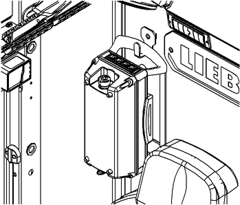

ID_3750b0448a3111ef95cedfd1187fe836-f31234e81e8acad10a1e9aa56ef0f885-de-DE.html
true
Funkempfänger in Maschine ausschalten
Sicherstellen, dass folgende Voraussetzungen erfüllt sind:
❑ | Last ist am Boden abgesetzt. |
❑ | Betriebsfreigabehebel ist hochgezogen. |
Kippschalter Fernsteuerung Betrieb an Schalterleiste in Kabine auf Position „Ausgeschaltet“ 2 stellen. |
Funkempfänger ist ausgeschaltet. |
Verbindungsaufbau mit Fernsteuerung Betrieb ist gesperrt. |
Funktion des Zündschlosses ist wiederhergestellt. |
Drehschalter Ein/Aus an Fernsteuerung Betrieb auf Position „Aus“ stellen. |
Fernsteuerung Betrieb wird heruntergefahren. |

Fig. 4246: Fernsteuerung Betrieb in Kabine verstauen
Fig. 4246: Fernsteuerung Betrieb in Kabine verstauen
Der Not-Halt der Fernsteuerung Betrieb muss verdeckt sein.
Fernsteuerung Betrieb in Kabine verstauen. |